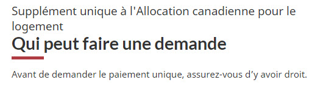
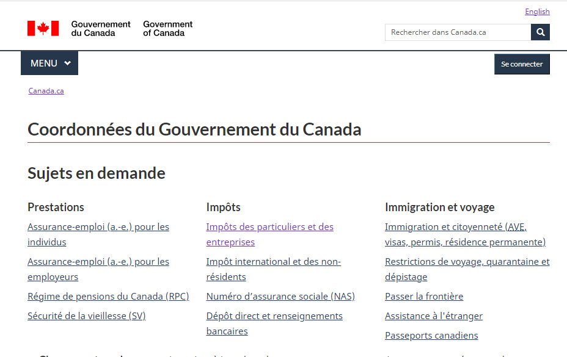
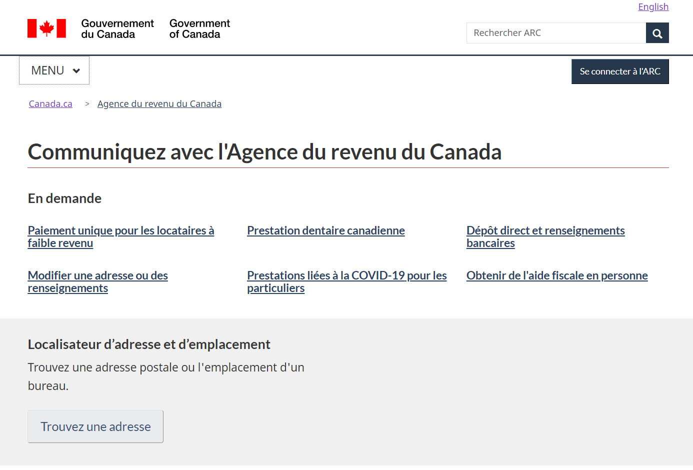
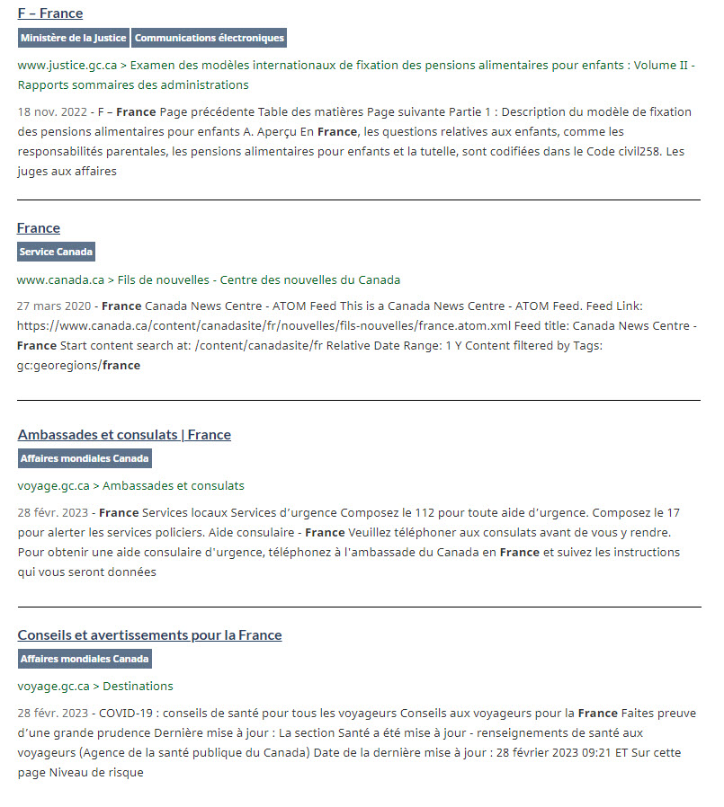
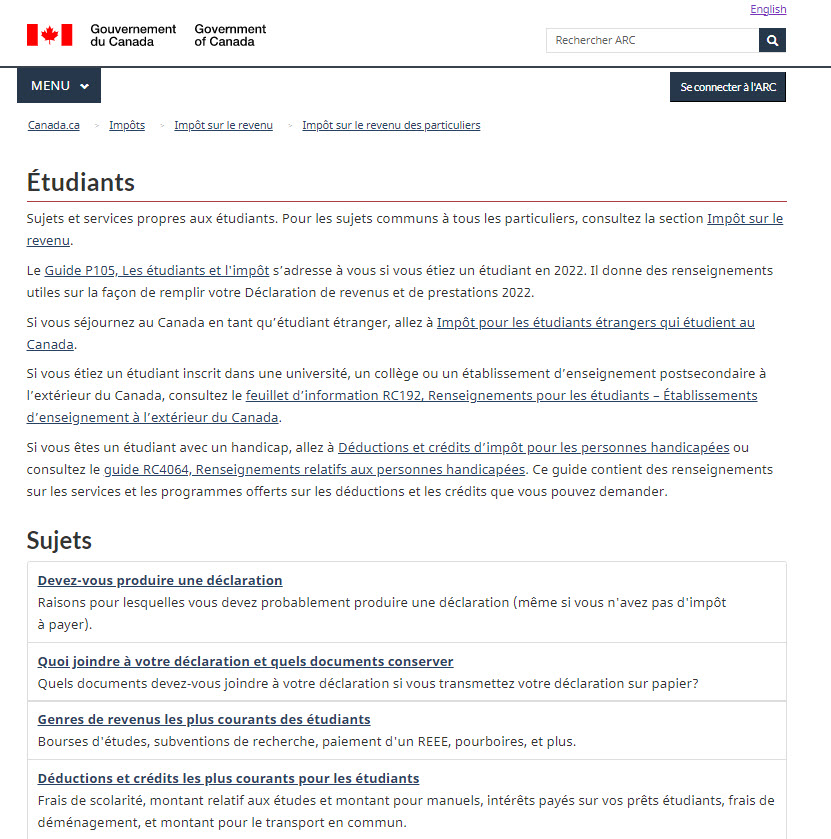
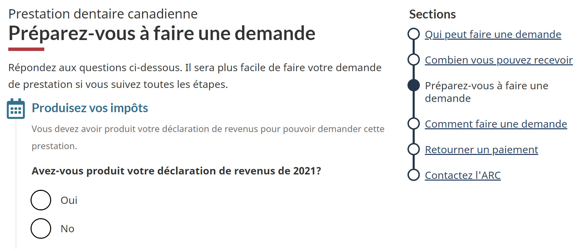
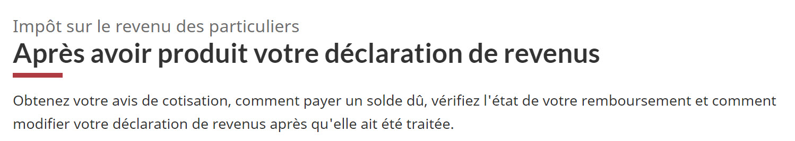

Titres et sous-titres - Système de conception GCWeb

Utilisez un titre ou un sous-titre pour identifier le contenu qui le suit immédiatement. Les titres et les sous-titres sont des textes de grande taille, en gras, concis et de nature hiérarchique.
Sur cette page
- Comment l'appliquer
- Rédiger de bons titres et sous-titres
- Choisissez des titres courts et clairs
- Utilisez des mots-clés au début
- Respectez les règles relatives aux majuscules
- N'utilisez pas de ponctuation à la fin d'un titre
- Ajoutez du texte après chaque titre
- Choisir le meilleur titre (H1)
- Faites correspondre le titre de la page avec la balise de titre dans les métadonnées
- Donnez un titre unique à votre page
- Les titres de page doivent être courts
- Utilisez des titres superposés pour un ensemble de pages apparentées
- Vérifiez et mettez à jour les liens entrants si vous modifiez des titres de page
- Entraînez-vous à rédiger des titres de page
- Organiser le contenu à l'aide de sous-titres (H2 et suivants)
- Options de conception
- Composantes et fonctionnalités complémentaires
Comment l'appliquer
Suivez ces règles pour créer des titres utiles pour votre contenu, y compris le titre de page (aussi appelé H1 sur une page Web) et les sous-titres (aussi appelés H2, H3, H4 et suivants sur une page Web).
Rédiger de bons titres et sous-titres
La plupart des gens survolent les titres et les sous-titres pour repérer des mots-clés qui confirment qu'ils ont trouvé le contenu recherché. Les personnes qui utilisent les technologies d'aide peuvent se servir d'un logiciel pour entendre les mots clés ou utiliser les raccourcis du clavier pour naviguer vers tous les sous-titres.
Choisissez des titres courts et clairs
Assurez-vous que le titre donne une idée claire de ce qui suit et qu'il :
- est court, sans mots superflus
- ne comprend pas d'abréviation, sauf si elle est mieux connue du public cible que son équivalent en version longue
- ne comprend pas de message promotionnel (comme une affirmation subjective) puisqu'il pourrait semer la confusion et empêcher les gens de lire la page ou le document
Exemple : Utilisation d'une abréviation avec son équivalent en version longue
Les données sur la recherche de mots-clés montrent que certaines personnes utilisent une abréviation et certains utilisent plutôt son équivalent en version longue. Pour vous assurer que les deux types de personnes peuvent trouver et comprendre le contenu, vous pouvez utiliser à la fois l'abréviation et la forme longue dans le titre.
Par exemple :
- À propos de l'Agence du revenu du Canada (ARC)
- Prestation canadienne d'urgence (PCU)
- Régime enregistré d'épargne-études (REEE)
Si aucune abréviation n'est déjà couramment utilisée, n'en introduisez pas.
Utilisez des mots-clés au début
Mettez les termes les plus pertinents au début du titre ou du sous-titre. Les gens parcourent souvent la partie gauche (les premiers mots de chaque élément) d'une liste dans une page ou un document (résultats de recherche, menu, table des matières). Il est peu probable qu'ils lisent le reste du texte si les premiers mots du titre n'attirent pas leur attention.
Faites des recherches pour identifier les mots que vos utilisateurs sont susceptibles de rechercher et de comprendre.
Conséquences sur le français
Lorsque vous rédigez votre titre, il est important de tenir compte du fait que l’ordre des mots est différent en français et en anglais.
Les adjectifs sont souvent placés après le nom en français, alors qu’en anglais, ils sont placés avant le nom. Le mot que vous placez au début d’un élément de la liste dans une langue pourrait être déplacé dans l’autre langue. Assurez-vous que les mots les plus importants sont placés au début dans les deux langues afin que tous les utilisateurs aient la même expérience Web.
Exemple : Ordre des mots dans un titre
Exemple 1
- Français : Taux et tranches d’imposition pour les particuliers
- Anglais : Individual tax rates and brackets
Afin que le titre soit plus facile à balayer rapidement, vous pourriez changer le titre anglais et placer « tax rates » au début du titre :
Anglais : Tax rates and brackets for individuals
L’information importante serait alors déplacée au début du titre dans les deux langues.
Exemple 2
- Français : Trousse d’impôt de l’Alberta
- Anglais : Alberta tax package
Dans ce cas, vous pourriez utiliser la ponctuation en français (tiret ou deux points) pour déplacer le contenu qui doit être lu en premier (Alberta) devant les autres mots (Trousse d’impôt) :
Français : Alberta – Trousse d’impôt
Respectez les règles relatives aux majuscules
Sur les pages Web, le premier mot des titres suivants doit commencer par une majuscule :
- Titres de page
- Titres de sections
- Sous-titres
- Titres de tableaux
- En-têtes des colonnes / rangées d’un tableau
Pour les autres mots des titres et des sous-titres, suivez les règles habituelles relatives au majuscules. Par exemple, mettez en majuscules les noms propres lorsqu’ils apparaissent dans un titre.
N'utilisez pas de ponctuation à la fin des titres
N'utilisez pas de ponctuation à la fin des titres, titres de sections, sous-titres, légendes et en-têtes de tableaux. Utilisez le point d'interrogation uniquement lorsqu'on demande aux gens de fournir des renseignements dans un formulaire, un questionnaire ou un sondage. Évitez d'écrire les titres sous forme de question, car nous fournissons des réponses, nous ne posons pas de questions.
Exemple d'utilisation correcte des majuscules et de la ponctuation dans les titres comporte des images
Lorsque vous utilisez des titres de page qui ressemblent à des questions, n'utilisez pas de ponctuation dans le titre. Par exemple :
- Qui est admissible
- Qu'est-ce que le CIPH
L'exemple suivant montre l'utilisation correcte de la majuscule dans le titre qui comprend également un nom propre et du titre d'une page qui ressemble à une question mais qui ne contient aucune ponctuation.

Version texte : Exemple de ponctuation dans les titres
Le haut d'une page Web contenant :
- Un titre superposé qui comporte :
- Premier niveau : Supplément unique à l'Allocation canadienne pour le logement
- Deuxième niveau : Qui peut faire une demande
- Résumé de la page
- Avant de demander le paiement unique, assurez-vous d'y avoir droit.
Ajoutez du texte après chaque titre
Il est généralement préférable que les titres soient suivis de texte et non d'un autre titre. Utilisez le texte entre un titre et un sous-titre pour résumer ou présenter ce que l'utilisateur trouvera dans les sous-sections.
Dans certains cas, il est possible de faire suivre un titre d'un autre titre. Par exemple :
- lorsqu'un titre introduit une table des matières sur la même page (en ajoutant un menu « Sur cette page », par exemple)
- lorsque l'objectif de la page est évident d'après le titre de la page et qu'un texte d'introduction n'apporterait aucune valeur ajoutée à l'utilisateur
Exemple : Page de coordonnées où le titre est suivi d'une autre titre comporte des images

Version texte : Coordonnées du Gouvernement du Canada
Le haut d'une page Web qui comporte :
- Titre de la page : Coordonnées du Gouvernement du Canada
- Le titre de la page est immédiatement suivi d'un sous-titre de deuxième niveau intitulé « Sujets en demande »
- Le sous-titre de deuxième niveau est immédiatement suivi de trois listes de liens portant chacune un titre.
- Chacune des listes contient 4 ou 5 liens vers des pages de coordonnées spécifiques.

Version texte : Page Communiquez avec l'Agence du revenu du Canada
Le haut d'une page Web qui comporte:
- Titre de la page : Communiquez avec l'Agence du revenu du Canada
- Le titre de la page est immédiatement suivi d'un sous-titre de deuxième niveau intitulé « En demande »
- Le sous-titre de deuxième niveau est immédiatement suivi de 6 liens vers des pages Web spécifiques
- Ces liens sont suivis d'un encadré gris dont le titre est « Localisateur d'adresse et d'emplacement » et qui contient la phrase « Trouvez une adresse postale ou l'emplacement d'un bureau » et un bouton « Trouvez une adresse »
Choisir le meilleur titre (H1)
Le titre de la page (aussi appelé en-tête de niveau 1 ou H1 sur une page Web) est le titre que vous voyez en haut de la page. Assurez-vous qu'il décrit bien le type d’information qui suit dans un langage clair et simple.
Un titre descriptif est important pour les raisons suivantes :
- Le lecteur doit savoir si le document s’applique à lui.
- Les moteurs de recherche affichent souvent le titre sans contexte dans la liste des résultats de recherche.
Choisissez un titre qui conserve son sens, même hors contexte.
Faites correspondre le titre de la page et la balise de titre dans les métadonnées
Le titre de la page apparaît à deux endroits. Il se trouve :
- en haut de la page (il s’agit du texte le plus grand et en gras (en-tête de niveau 1 ou H1))
- dans les métadonnées de la page, dans la balise de titre (
<title>), qui est également affichée tout en haut dans l'onglet du navigateur
L'en-tête H1 et la balise de titre ont tous deux un rôle important à jouer :
- La balise de titre est utilisée dans les résultats de recherche et aide l'utilisateur à choisir la bonne page dans une liste de résultats.
- L'en-tête H1 indique à l'utilisateur qu'il se trouve sur la bonne page.
L'en-tête H1 et la métadonnée de titre doivent être identiques, à l'exception de « - Canada.ca » qui est ajouté à la fin de la balise de titre pour tout le contenu du site canada.ca.
Si vous utilisez un titre de page superposé, assurez-vous d'inclure les deux parties du titre superposé dans la balise de titre.
Exemple de titre H1 et de balise <title> qui concordent
-
H1
Crédit d'impôt pour personnes handicapées (CIPH)
Comment faire une demande -
Balise title dans les métadonnées
<title>Comment faire une demande - Crédit d'impôt pour personnes handicapées (CIPH) - Canada.ca</title>
Donnez un titre unique à votre page
La plupart des moteurs de recherche repèrent les résultats pertinents selon :
- le titre de la page
- les titres de section
- les sous-titres
Ils affichent le titre de page sous forme de lien dans la page de résultats.
Les titres de page uniques permettent aux moteurs de recherche de faire une distinction entre diverses pages similaires. Ils font également en sorte que les gens n'aient pas à regarder de nombreuses pages ayant le même titre pour trouver l'information requise.
Vous pouvez utiliser un moteur de recherche pour vérifier si votre titre est unique.
Pour les documents, cherchez le titre complet du document.
Pour les pages Web du gouvernement du canada, cherchez le titre de la page, suivi de « site: » et du nom de domaine du gouvernement du Canada (par exemple, « salubrité des aliments site:gc.ca » ou, « salubrité des aliments site:canada.ca »).
Exemples des titres de page qui ne sont pas uniques comporte des images
Un titre de page peut avoir du sens dans le contexte de la page ou de la page parent qui y est liée. Cependant, il pourrait ne pas avoir de sens lorsqu'il est affiché dans les résultats de recherche. Assurez-vous que les titres sont uniques et qu'ils fournissent un contexte.
- Exemple 1 : France
Dans les résultats de recherche suivants, on remarquera que certains titres fournissent un contexte spécifique pour aider l'utilisateur à choisir la bonne page (Ambassades et consulats, Conseils et avertissements), tandis que d'autres indiquent seulement que la page concerne la France.

Version texte : Résultats de recherche pour France
Résultats d'une recherche sur Canada.ca pour le mot « France ». Les résultats comprennent :
- F - France
- France
- Ambassades et consulats | France
- Conseils et avertissements pour la France
- Exemple 2 : Étudiants
Dans l'exemple suivant, le titre de la page est « Étudiants ». Cependant, un titre de page plus précis et unique serait « Renseignements fiscaux pour les étudiants ».

Version texte : Étudiants
Une page Web contenant les éléments suivants :
- Titre : Étudiants
- 5 paragraphes de texte contenant des liens
- Une liste de sujets concernant les étudiants et l'impôt sur le revenu, avec des liens et des descriptions
Les titres de page doivent être courts
Les résultats de recherche Google affichent seulement les 60 à 65 premiers caractères d'un titre de page. Veillez à ce que votre titre soit concis et à ce que les mots clés soient placés au début du texte afin que les mots les plus pertinents apparaissent dans les résultats de recherche. Supprimez les mots inutiles.
Utilisez des titres superposés pour un ensemble de pages apparentées
Un H1 superposé montre que la page appartient à un ensemble de pages plus grand. N'utilisez pas ce modèle lorsque vous pouvez écrire un titre de page unique et descriptif.
Il existe deux façons différentes de mettre en place un H1 superposé.
Navigation de style métro
Cette méthode est utilisée seulement pour les pages utilisant la navigation de style métro du système de conception GCWeb, par exemple, la page « Préparez-vous à faire une demande » de la Prestation dentaire canadienne.
Dans une navigation de style métro, deux H1 sont utilisés dans la conception. Consultez la section sur les options de conception pour en savoir en plus sur le codage.
Titre superposé - navigation de style métro comporte des images

Version texte : Titre superposé utilisant la navigation de style métro
Une page Web contenant les éléments suivants :
- Un titre sur deux lignes :
- La ligne du haut est en caractères plus petits, n'est pas en gras et indique « Prestation dentaire canadienne »
- La ligne du bas est en caractères plus grands, en gras et indique « Préparez-vous à faire une demande »
- La page comporte également des instructions, une liste de vérification interactive et la navigation de style métro indiquant où se trouve l'utilisateur dans le processus de demande de la Prestation dentaire canadienne.
H1 superposé dans un sujet
Utilisez cette méthode lorsqu'un sujet ou une tâche appartient à un sujet plus vaste et qu’une personne risque de confondre avec une page similaire appartenant à un autre sujet.
Par exemple, utilisez un titre superposé pour montrer la différence entre la section « Après avoir produit votre déclaration de revenus » qui se trouve sous « Impôt sur le revenu des particuliers » pour la distinguer de la section « Après avoir produit votre déclaration de revenus » qui se trouve sous « Impôt sur le revenu des sociétés ».
Dans ce cas, le titre superposé est codé comme un seul H1. Consultez la section sur les options de conception pour en savoir en plus sur le codage.
Titre superposé - H1 superposé dans un sujet comporte des images

Version texte : Titre superposé pour un sous-sujet
Une page Web contenant les éléments suivants :
- Un titre sur deux lignes :
- La ligne du haut est en caractères plus petits, n'est pas en gras et indique « Impôt sur le revenu des particuliers »
- La ligne du bas est en caractères plus grands, en gras et indique « Après avoir produit votre déclaration de revenus »
- Il est suivi d'une phrase qui décrit le contenu de la page.
Vérifiez et mettez à jour les liens entrants si vous modifiez des titres de page
Si vous modifiez le titre d'une page Web existante, n'oubliez pas de mettre à jour tous les liens entrants vers cette page. Envoyez une demande de service à la DCPN pour demander à l'équipe de développement Web de créer un rapport sur les liens de renvoi. Ce rapport comprendra une liste des autres pages de l'ARC qui renvoient à votre page, ainsi que le texte du lien utilisé. Contactez les personnes responsables de ces pages Web et demandez-leur de mettre à jour le texte du lien pour refléter le nouveau nom de votre page.
Utilisez l'outil d'analyse de page pour voir s'il y a des pages de renvoi importantes qui n'appartiennent pas à l'ARC. Contactez les propriétaires de ces pages et demandez-leur de mettre à jour le texte du lien.
Entraînez-vous à rédiger des titres de page
Les exemples ci-dessous montrent comment vous pouvez appliquer ces règles pour réécrire les titres de pages afin de les rendre plus efficaces.
Titre unique et descriptif
Écrivez
- Gérer les notes des dossiers d'accidents et de maladies – Modèle
N'écrivez pas
- Notes des dossiers
Titre débutant par les mots les plus importants
Écrivez
- Boutique hors taxe – Remplir une déclaration des droits d'accise
N'écrivez pas
- Comment remplir une déclaration des droits d'accise pour une boutique hors taxes
Title does not include unnecessary information
Écrivez
- Programme de recrutement
N'écrivez pas
- Informations sur le programme de recrutement – Ce que vous devez savoir
Titre concis
Écrivez
- Approuver les demandes de voyage
N'écrivez pas
- Comment approuver les demandes de voyage
Organisez le contenu à l'aide de sous-titres (H2 et suivants)
Le titre, les titres de section et les sous-titres de votre contenu Web aident les gens à trouver facilement des renseignements à l'écran. Utilisez des titres pour diviser le texte en sections logiques à environ tous les 200 mots.
Faites en sorte qu'on puisse suivre la trace de l'information
Sur le Web, les gens essaient de trouver où se trouve l’information plutôt que de lire le contenu du début à la fin. Ils parcourent le contenu à la recherche de réponses ou d'informations qui les aideront à accomplir leur tâche. S'ils ne trouvent pas ce qu'ils cherchent, ils recherchent un lien qui les mènera dans la bonne direction. C'est ce qu'on appelle suivre la trace de l'information.
Les titres, les sous-titres, les liens et le premier paragraphe du contenu sont des éléments importants pour pouvoir suivre la trace de l'information.
De bons titres et sous-titres permettent aux utilisateurs de faire un balayage rapide pour trouver ce qu'ils cherchent. Ils sont également essentiels pour rendre le contenu Web accessible. Les utilisateurs de lecteurs d'écran peuvent utiliser les titres et sous-titres pour naviguer rapidement entre les sections et pour mieux comprendre ou résumer le contenu.
Le premier paragraphe permet également de suivre la trace de l'information. Utilisez-le pour présenter le contenu dans un langage clair et simple. Il aide les gens à déterminer s’ils ont trouvé ce qu'ils cherchent. C'est aussi souvent le texte qui s'affiche dans les résultats des moteurs de recherche.
Utilisez une structure parallèle
Une structure parallèle signifie que les sous-titres sont grammaticalement identiques et présentent d'autres similitudes fondamentales.
Exemple : Utilisation d'une structure parallèle pour les directives de cette page
Par exemple, sur cette page, les titres de section principaux (H2) utilisent l'infinitif (verbes se terminant par « er » et tous les sous-titres (H3) sont rédigés comme des instructions ou des tâches).
- Rédiger de bons titres et sous-titres
- Choisissez des titres courts et clairs
- Utilisez des mots-clés au début
- N'utilisez pas de ponctuation à la fin d'un titre
- Ajoutez du texte après chaque titre
- Choisir le meilleur titre (H1)
- Faites correspondre le titre de la page avec la balise de titre dans les métadonnées
- Donnez un titre unique à votre page
- Les titres de page doivent être courts
- Utilisez des titres superposés pour un ensemble de pages apparentées
- Vérifiez et mettez à jour les liens entrants si vous modifiez des titres de page
- Entraînez-vous à rédiger des titres de page
- Organiser le contenu à l'aide de sous-titres (H2 et suivants)
- Faites en sorte qu'on puisse suivre la trace de l'information
- Utilisez une structure parallèle
- Structurez le contenu à l'aide de niveaux de sous-titres
- Créez une table des matières pour le contenu long
N'oubliez pas de combiner la structure parallèle avec d'autres règles énoncées sur cette page, par exemple en plaçant les mots les plus importants en premier.
Exemple : Utilisation d'une structure parallèle et de mots clés au début
- Écrivez
- Importations de :
- biens de consommation
- produits alimentaires et agricoles
- textiles et de vêtements
- véhicules
- N'écrivez pas
- Importation de biens de consommation
- Importation de produits alimentaires et agricoles
- Importation de textiles et de vêtements
- Importation de véhicules
Structurez votre contenu à l'aide des niveaux de sous-titres
Utilisez les options de style automatisées de votre logiciel de traitement de texte pour structurer vos titres. Elles permettent de bien distinguer les sous-titres du contenu et d'assurer l'uniformité. Des sous-titres présentés de façon claire et cohérente aident votre équipe Web à produire la page plus rapidement en évitant les erreurs.
Pour le titre de page:
- utilisez ce style de présentation : Titre 1
- une seule fois dans une page
Pour une section principale :
- utilisez ce style de présentation : Sous-titre 2
- plusieurs fois dans une page
Pour une sous-section :
- utilisez ce style de présentation : Sous-titre 3
- plusieurs fois et dans plusieurs sections principales
Pour une sous-sous-section :
- utilisez ce style de présentation : Sous-titre 4 (et ainsi de suite)
- plusieurs fois et dans plusieurs sous-sections
Évitez d'utiliser des titres H5. Envisagez plutôt de restructurer le contenu.
Créez une table des matières pour le contenu long
Ajoutez une table des matières à la page lorsque :
- une personne aurait à faire défiler la page de façon excessive (plus de 2 ou 3 défilements) pour visualiser l'ensemble du contenu de la page
- la page est divisée en sous-sections, chacune ayant son propre sous-titre
Le fait d’avoir généralement plus de 2 en-têtes H2 signifie que la page est assez longue pour nécessiter une table des matières.
Apprenez-en plus sur la mise en place d'une table des matières sur une page.
Conseil : Créez une table des matières pour vous assurer que vous avez structuré les titres correctement
Utilisez la fonction de table des matières de votre logiciel de traitement de texte pour créer une table des matières en fonction des niveaux d'en-têtes du document. Vérifiez ensuite cette table des matières pour déterminer si vous avez organisé correctement le titre de page, les titres de sections et les sous-titres.
Supprimez la table des matières avant d’envoyer le document aux fins d’approbation si elle n'est pas requise pour la version finale.
Options de conception
Apparence
En-tête H1 – Titre de la page parent
En-tête H1
En-tête H2
En-tête H3
En-tête H4
En-tête H5
Code HTML
Superposé - Sujet
<h1 id="wb-cont">En-tête H1</h1><h2>En-tête H2</h2><h3>En-tête H3</h3><h4>En-tête H4</h4><h5>En-tête H5</h5>
Superposé - Navigation de style métro
Consultez le : Navigation de style métro
Composantes et fonctionnalités complémentaires


- Date de modification :